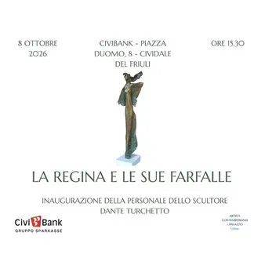

da gio 8 ott a ven 27 nov
La regina e le sue farfalle - Mostra personale di Dante Turchetto
Mostra personale di Dante Turchetto presso gli spazi espositivi della CiviBank di Cividale del Friuli
 Indicazioni
Indicazioni
- Costi e prenotazioni
- Costo non indicato · Prenotazione non indicata
- Programma
- Programma da verificare. Apri la fonte ufficiale per orari e possibili aggiornamenti.
- In caso di maltempo
- Nessuna indicazione specifica pubblicata.
- Note
- Acquisito automaticamente dalla fonte.
L’EVENTO
Descrizione completa
La regina e le sue Farfalle
Personale di Dante Turchetto
Spazi espositivi di CiviBank – Gruppo Sparkasse Piazza Duomo, 8 – Cividale del Friuli
Rendere etereo il bronzo: un ossimoro che solo un grande talento può generare e che, nella scultura di Dante Turchetto, assume le forme fluttuanti di figure femminili. “Per me la donna è spirito, è creatività, è colei che – sempre in movimento – si attiva per portare il bene ovunque…”
Dalla madre generatrice di vita alla vittima di violenza con la veste lacerata, da colei che ci avvolge e protegge con la delicatezza di una foglia fattasi manto alla donna infaticabile la cui chioma è resa vitale da un soffio di vento: la sapienza della tecnica appresa da un Maestro si unisce alla sempre presente curiosità per ciò che ci circonda, ma è l’anima che l’artista insuffla a conferire alla materia la forza, la vitalità e la grazia di queste sculture che omaggiano tutte le donne e che paiono chiedere una carezza lieve come un soffio.
Inaugurazione giovedì 8 ottobre 2026 ore 15.30
L’esposizione è visitabile durante gli orari di apertura della banca: dal lunedì al venerdì dalle ore 08.20 alle ore 13.20
dall’8 ottobre al 27 novembre 2026
Per maggiori informazioni:
Dante Turchetto: via Burtolo, 27 – Azzano Decimo (PN) cell. + 39 335 785 9643 e-mail: turchetto_scultore@yahoo.it
Fb: Dante Turchetto Instagram: danteturchetto
IL PROGRAMMA
Programma e orari
Appuntamenti raccolti dalle fonti elencate. Dove manca un orario, non è ancora disponibile in questa scheda.
Programma pubblicato
- Dal 2026-10-08 al 2026-11-27
INFORMAZIONI UTILI
Prima di partire
- Controllare la fonte prima di partire.
ORGANIZZAZIONE